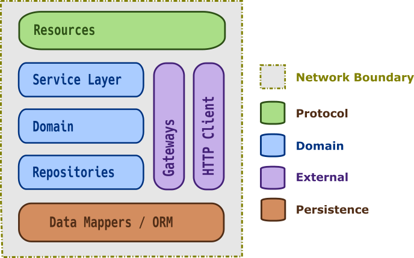
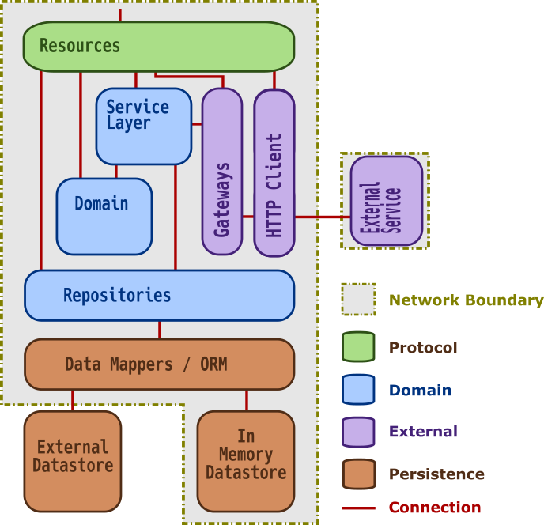
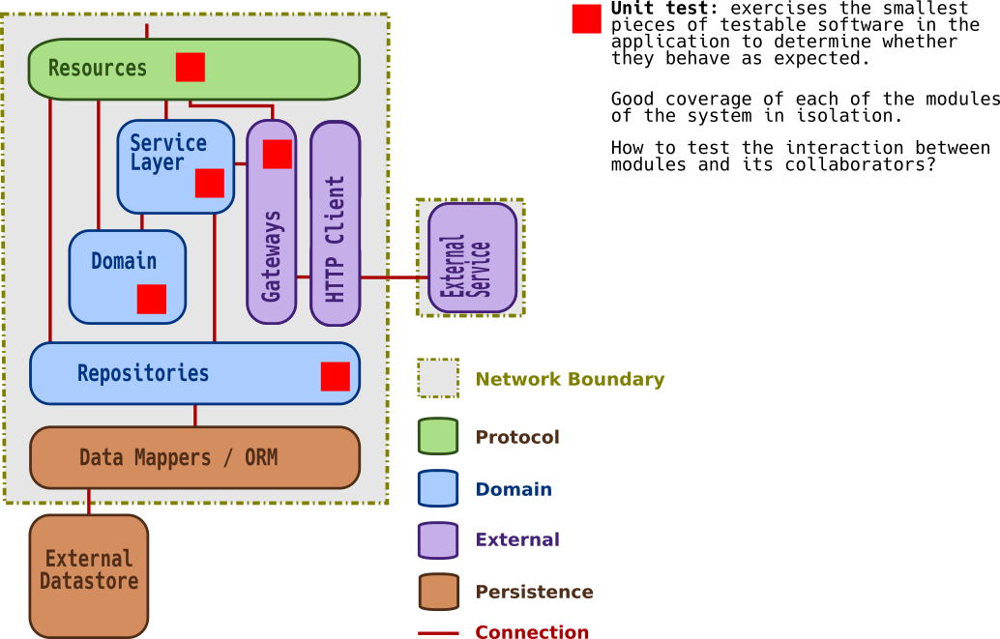
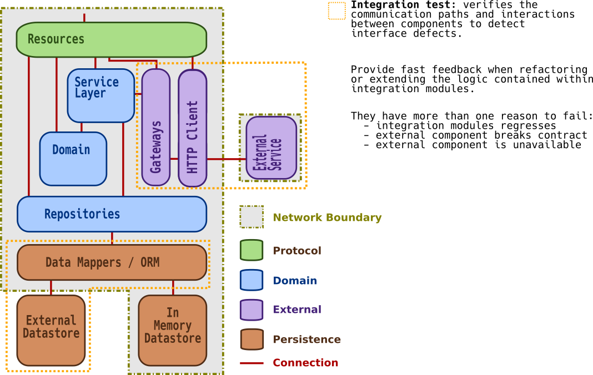
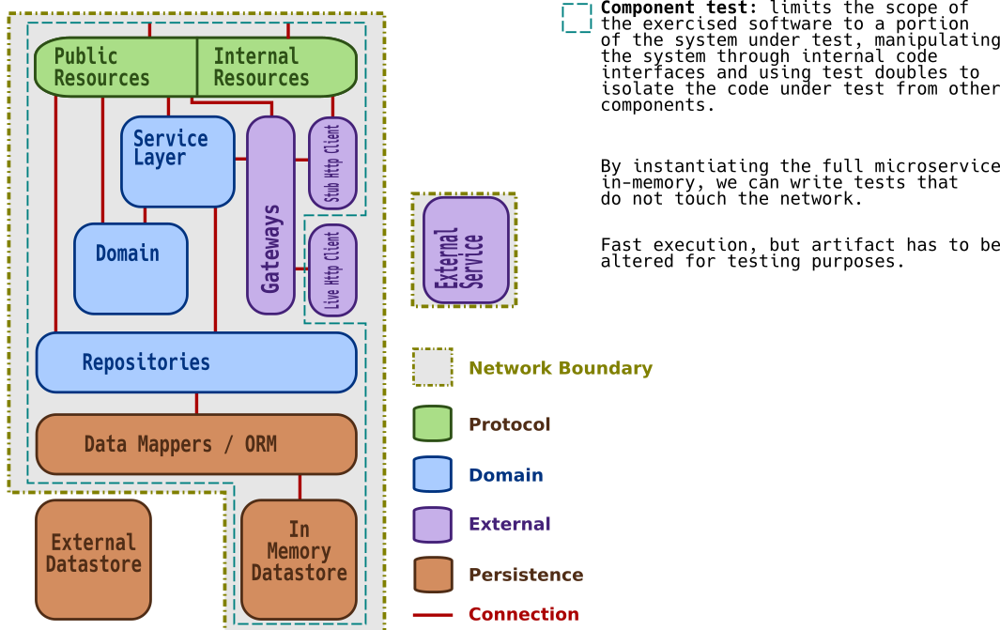
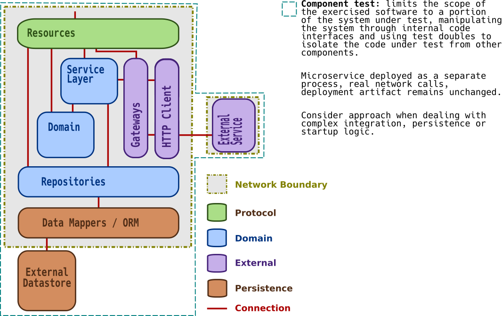
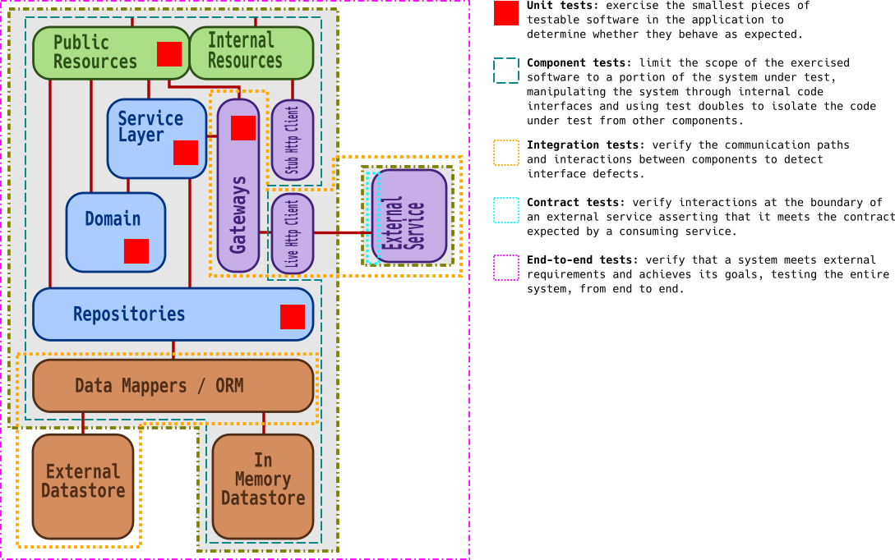
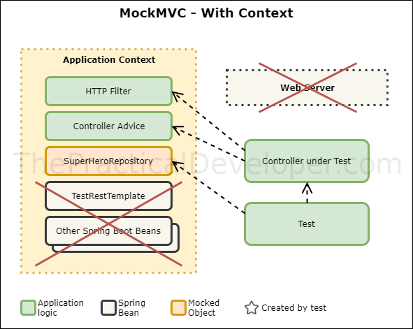
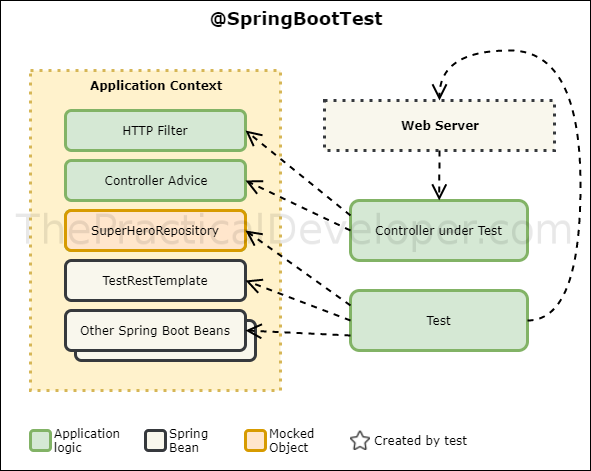

plugins {
id 'java'
}
repositories {
mavenCentral()
}
dependencies {
testImplementation('org.junit.jupiter:junit-jupiter:5.6.0')
testImplementation('org.mockito:mockito-core:2.23.4')
}
test {
useJUnitPlatform()
}Testing Strategies
How to apply them to Spring Boot
Sebastian Kaiser (@sk4is3r) - Crvsh GmbH
Who am I?
Backend software engineering team
Agenda
Testing Strategies
Spring Boot Testing Strategies
Discussion
Conclusion
Testing Strategies
Test Pyramid
Conceptual view of microservices
Often, microservices display similar internal structure consisting of some or all of the displayed layers.

Connections between modules

Unit Tests

Integration Tests

Component Tests (in-process)

Component Tests (out of process)

End-to-end Tests
Summary

Spring Boot Testing Strategies
Two main approaches
Testing slices of your application, e.g.
@WebMvcTest- for testing the controller layer@JsonTest- for testing the JSON marshalling and unmarshalling@DataJpaTest- for testing the repository layer
Testing complete application
@SpringBootTest- looks for main configuration, injects all the beans
Server-side tests
are the ones to verify how the server logic works. In this case, you normally mock the request, and you want to check how your server logic reacts. These kind of tests are tightly related to the Controller layer / Resources in your application since it’s the part of Spring that takes care of handling the Http request.
Inside-server tests: directly test controller layer without a web server
Outside-server tests: perform HTTP request to your application to test it.
Unit testing without Spring Boot
Plugin and basic configuration
Basic usage
@RunWith(MockitoJUnitRunner.class)
class ExampleUnitTest {
private UnitUnderTest unit;
@Mock
private Dependency mocked;
@BeforeEach
void setup() {
unit = new UnitUnderTest(mocked);
}
@Test
void should_test_condition() {
when(mocked.doSomething(any())).thenReturn(true);
assertTrue(unit.parse("some input").isSuccess());
}
}Testing slices of your application
Plugin and basic configuration
plugins {
id 'java'
id 'org.springframework.boot' version '2.2.1.RELEASE'
id 'io.spring.dependency-management' version '1.0.8.RELEASE'
}
dependencies {
implementation 'org.springframework.boot:spring-boot-dependencies:2.2.1.RELEASE'
implementation 'org.springframework.boot:spring-boot-starter-web'
testImplementation 'org.springframework.boot:spring-boot-starter-test'
}Testing the controller layer

Using MockMvc standalone
@RunWith(MockitoJUnitRunner.class)
class ControllerTest {
private MockMvc mvc = MockMvcBuilders
.standaloneSetup(new MyController())
.addFilters(...)
.addInterceptors()
.setContentNegotiationManager(...)
.setControllerAdvice(...)
.setMessageConverters(...)
.build(); (1)
@Mock
private Dependency dependency;
@InjectMocks
private MyController controller;
//---- tests ----
}| 1 | Does not load any context, context must be defined manually. |
Testing the controller layer

Using MockMvc with context
@WebMvcTest(MyController.class) (1)
class ControllerTest {
@MockBean
private MyRepository repository;
@Test
void exampleTest(@Autowired MockMvc mvc) { (2)
given(myRepository.get(2)).willReturn("something"); (3)
mvc.perform(get("/")).andExpect(status().isOk())
.andExpect(content().string("Hello World")); (4) (5)
}
}| 1 | Load partial context (Controller and surrounding configuration) |
| 2 | MockMvc instance gets autoconfigured |
| 3 | Use @MockBean to mock Spring managed dependencies |
| 4 | There is no web server involved, responses we are verifying are fake |
| 5 | Response is of type MockHttpServletResponse |
Test complete application
@SpringBootTest
By default, will not start a server. Use webEnvironment attribute to refine how your tests run:
MOCK(default): Loads a webApplicationContext, provides mock web environment, use it for mock-based testing, MockMVC with application contextRANDOM_PORT: Loads aWebServerApplicationContext, embedded web server started, random portDEFINED_PORT: Loads aWebServerApplicationContext, embedded web server started, defined portNONE: Loads anApplicationContextbut does not provide any web environment (mock or otherwise
Testing with a real web server

Using RANDOM_PORT or DEFINED_PORT:
outside-server test
loads the entire Spring Boot context
web server included
RestTemplateorTestRestTemplatereal server calls
ability to mock using
@MockBean
When using |
Testing with a real web server
using mocks
@SpringBootTest(webEnvironment = SpringBootTest.WebEnvironment.RANDOM_PORT)
class ControllerTest {
@MockBean
private ProfileFacade facade;
@Test
void exampleTest(@Autowired TestRestTemplate restTemplate) throws Exception {
when(facade.findUserByCustomerId(any())).thenReturn(Optional.empty());
final HttpEntity<String> entity = new HttpEntity<>(requestJson, headers);
ResponseEntity<String> response = restTemplate
.exchange("/abc", HttpMethod.GET, entity, String.class);
assertEquals(HttpStatus.NOT_FOUND, response.getStatusCode());
}
}Real server calls. The responses we want to verify are of type |
Testing with a real web server
Registering stubs programmatically
@SpringBootTest(webEnvironment = WebEnvironment.RANDOM_PORT)
@AutoConfigureWireMock(port = 0)
class WiremockForDocsTests {
@Autowired
private Service service;
@Before
void setup() {
this.service.setBase("http://localhost:"
+ this.environment.getProperty("wiremock.server.port"));
}
@Test
void contextLoads() throws Exception {
stubFor(get(urlEqualTo("/resource")).willReturn(aResponse()
.withHeader("Content-Type", "text/plain").withBody("Hello World!")));
assertThat(this.service.go()).isEqualTo("Hello World!");
}
}Testing with a real HTTP server
Registering stubs automatically
@SpringBootTest
@AutoConfigureWireMock(stubs="classpath:/stubs")
class WiremockImportApplicationTests {
@Test
void contextLoads(@Autowired Service service) throws Exception {
assertThat(service.go()).isEqualTo("Hello World!");
}
}How to do contract testing?
Summary
Links
Best Practices
F.I.R.S.T Principles
F - Fast
I - Independent
R - Repeatable
S - Self Validating
T - Timely
Spring Boot Testing the R.I.T.E way
Readable
Isolated or Integrated
Thorough
Explicit
Isolate functionality
Isolate the functionality to be tested by limiting the context of loaded frameworks/components.
Often times, it is sufficient to use jUnit without loading any additional frameworks.
Only load slices of functionality
Try to avoid loading the entire application context
Conclusion
One last word
As you make your app more testable, it should also make the app simpler and more maintainable. TDD should improve architecture: never harm it.